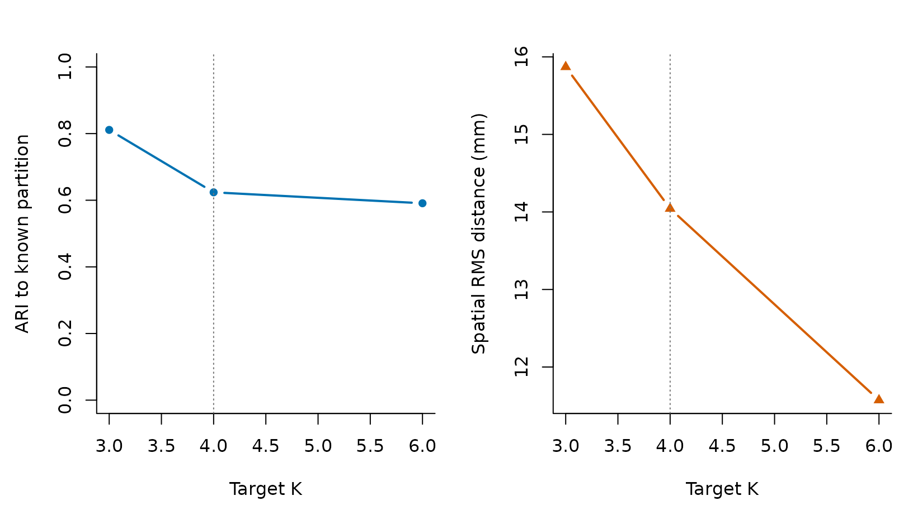
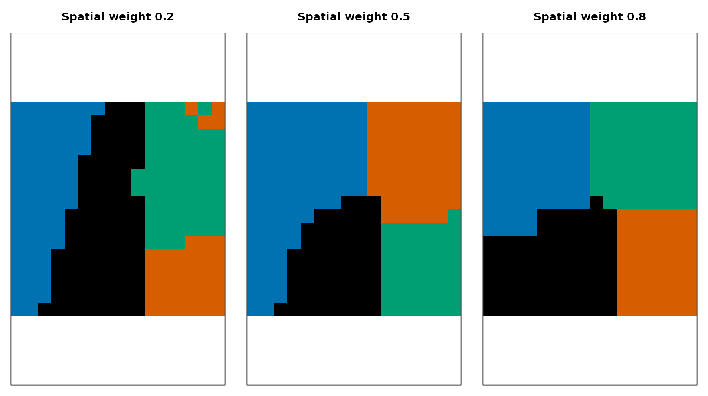

Which decisions come first?
Start with the scale of the scientific question, not with a search
for the largest validation score. n_clusters sets the
target granularity. The spatial_weight parameter sets how
strongly feature similarity is traded against spatial proximity, but its
exact mapping is method-specific. Both alter the partition you are
estimating.
A sensible tuning exercise therefore holds the dataset and method fixed, changes one quantity at a time, and records several named diagnostics. The example below uses G3S and a known synthetic partition so that parameter effects are visible.
syn <- generate_synthetic_volume(
scenario = "gaussian_blobs", dims = c(16, 16, 8),
n_clusters = 4, n_time = 40, noise_sd = 0.08, seed = 42
)What does K change?
K is a target parcel count, not a quality score. Fewer parcels make
coarser summaries; more parcels make finer summaries and reduce
observations per parcel. Some methods may return a different final
count, so always retain actual_k.
k_grid <- c(3L, 4L, 6L)
k_fits <- lapply(k_grid, function(k) {
cluster4d(
syn$vec, syn$mask, k, method = "g3s", spatial_weight = 0.5,
max_iterations = 5, connectivity = 26, parallel = FALSE
)
})| Requested_K | Actual_K | ARI_to_known | Spatial_RMS_mm | Minimum_size |
|---|---|---|---|---|
| 3 | 3 | 0.811 | 15.87 | 564 |
| 4 | 4 | 0.624 | 14.04 | 345 |
| 6 | 6 | 0.591 | 11.57 | 242 |

Changing target K changes both granularity and observed diagnostics on this fixture. The known partition has four regions, but the highest ARI here occurs at K = 3; matching a nominal count does not guarantee the best partition.
What does spatial weight change?
For G3S, larger spatial_weight puts more emphasis on
spatial proximity and less on feature similarity. That usually
encourages compact parcels, but the effect and useful range depend on
the data and method. Evaluate it rather than assuming that more compact
is automatically better.
weight_grid <- c(0.2, 0.5, 0.8)
weight_fits <- lapply(weight_grid, function(weight) {
cluster4d(
syn$vec, syn$mask, 4, method = "g3s", spatial_weight = weight,
max_iterations = 5, connectivity = 26, parallel = FALSE
)
})| Spatial_weight | ARI_to_known | Spatial_RMS_mm |
|---|---|---|
| 0.2 | 0.658 | 15.51 |
| 0.5 | 0.624 | 14.04 |
| 0.8 | 0.404 | 12.34 |

Middle axial slices as G3S spatial weight increases. A one-to-one maximum-overlap assignment preserves a distinct color for every predicted parcel while aligning arbitrary IDs to the known synthetic colors. The rightmost partition is physically tighter but agrees less with the known feature-defined regions.
On this fixture, increasing spatial weight reduces RMS distance from 15.51 mm to 12.34 mm, while agreement with the known partition falls. The executable checks establish that observation for this example only.
How should you tune real data?
- Choose a scientifically meaningful range of parcel counts before examining outcomes.
- Hold preprocessing, mask, method, and geometry fixed while varying one parameter.
- Record
actual_k, parcel-size distributions, spatial dispersion, temporal coherence, and stability under perturbation. - Reject invalid or degenerate results before ranking diagnostics.
- Report the full selection rule, not only the chosen setting.
Continue with Validate and compare for the exact validation and comparison contracts.